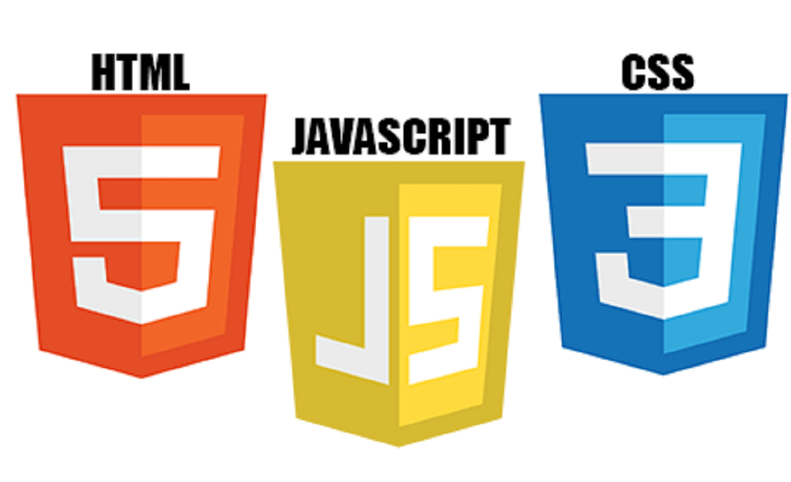

Front End
Front End Developer Nedir? Nasıl Olunur?
Front-end terimi, Türkçede önyüz anlamına gelmektedir. Bir web sitesi
oluşturulurken geliştirilen görünüm ve içerik ile alakalı tüm görsel,
işitsel, tasarımsal kısımları kapsayan bir işlemdir. Web sitesine
girdiğinizde karşılaştığınız renkli temalar, arka fonlar, yazı
tipleri, tasarımsal görseller ve bunların kullanıcıya hitap edebilecek
biçimde uyumlanması, sayfaya yerleştirilmesi gibi işlemlerin hepsi
front-end yani önyüz olarak adlandırılır. Bu işi yapan ve
geliştirenlere de front-end developer yani önyüz geliştirici denir.
Bir web sitesi oluşturulurken olaya tıpkı kamera önü ve kamera
arkasından oluşan bir film seti gibi bakılabilir. Kamera önü
Front-end, kamera arkası da Back-end terimlerine karşılık gelmektedir.
Bir filmde izleyici olarak gördüğümüz kamera önündeki her şey;
oyuncular, filmin çekildiği mekânlar, olaylar front-end’e örnek olarak
verilebilir. Kamera arkasında yer alan teknik ekipler ve ekipmanlar
ise Back-end’e örnektir.
Bir Front-end Developer olabilmek için bu iş ile ilgili bazı terimlere
hâkim olmak ve gerekli donanımlara sahip olmak gerekmektedir. Bu
donanımlara sahip olunabilmesi için, özellikle sıfırdan başlayacak
olan geliştirici adayları açısından bu yazımız önem arz etmektedir.
Kendimizi kullanıcı olarak ele aldığımızda, ilk olarak web sitelerinde
karşılaştığımız, sayfalarda gözümüze çarpan tüm aktivitelerin başından
sonuna dek son derece incelikle ve uzun süreçler sonucunda elde
edildiğini bilmemiz gerekir. Tasarımlara başlamadan önce verilen
emeklerin, tasarımlar oluşturulurken verilen emeklerden daha detaylı
olduğu aşikârdır. Bu sebeple, başlamadan önce yapılacak araştırmaların
detaylı ve çok yönlü olmasına dikkat edilmelidir.

Front End Developer Ne İş Yapar?
Front-end geliştirici, bu iş için gerekli HTML, CSS ve JavaScript
adında üç ana program dilini kullanarak bahsetmiş olduğumuz web
kullanıcıları tarafından ilk karşılaşılan sayfanın tüm tasarımlarını
ve oluşumunu gerçekleştirebilen kişidir. Kullanılan bu arayüzlere
“dil” denmesinin son derece isabetli bir özelliği vardır. Bu
programlar bildiğimiz herhangi bir Türkçe, İngilizce, Almanca gibi
farklı karakterleri ve sözcükleri bir araya getirerek kendine has bir
yazım ve imla oluşturmuştur. Bildiğimiz dillerden tek farkı,
çoğunlukla İngilizce kelimelerden oluşan kodlar olması ve bu
kelimeleri değişik karakterlerle bir arada kullanarak kendine ait
farklı bir dil oluşturmasıdır.
Aşağıda bir front-end geliştiricide yer alması gereken donanımsal ve
bilimsel özellikler ile yapabildikleri işlemler sıralanmıştır.
Her şeyden önce bir front-end geliştiricinin bahsetmiş olduğumuz bu üç
ana program geliştiricinin ne anlama geldiğini ve ne işe yaradığını,
yazımızdan yola çıkarak sonrasında akademik çapta bilgilerden
yararlanarak araştırmalıdır. En önemli başlangıç budur.
Front-end’ in kendine ait bölümleri bulunur. Örneğin metinlerle,
görsellerle ilgili düzenlemeler; yazı tipi, yazı fontu, rengi,
görünümü, görselin boyutu ve fonu gibi konuları barındırır. Bunun
dışında yazılan metinlerin ve görsellerin sayfaya yerleştirilmesi ve
sayfanın yapılandırılması ile ilgili konular başka bir alt bölümdür.
Bu alt bölümle uğraşmak istiyorsanız JavaScript dilini biliyor olmanız
yeterli olacaktır. Diğer arayüzleri kullanmanıza gerek yoktur. Ancak
metin ve görselleri oluşturacaksanız bu üç dili de bilmeniz gerekir.
Tasarımcı unvanıyla çalışmalar yapmayı düşünüyorsanız tek bir dilde
uzmanlaşmanız yeterli olacaktır.
Araştırmalar yapıldıktan sonra, geliştiricileri kullanabilmek için
kodlar yazmaya başlanmalıdır. Bu evreye geçebilmek için araştırmaların
sıkı ve sabırla yürütülmüş olması gerekmektedir.
Kodlar yazılmaya başlandıktan sonra, oluşumu sağlanmış web
sayfalarından ziyade, henüz başlanmamış ya da tamamen bitirilmemiş,
gelişimi ve düzenlenmesi üzerinde durulan web sitelerinde çalışmalara
başlamak gerekir. Bitirilerek kullanıcılara sunulmuş ve üzerinde
yalnızca düzeltmeler yapılan web sayfalarında, henüz yeni öğrenmiş
olduğunuz ve pratikte kullanmadığınız teorik bilgileri kullanabilmeniz
mümkün olmayacak ya da zorlanmanıza sebep olacaktır. O nedenle tamamen
basit kodlamalarla oluşturabileceğiniz komutlarla bir web sayfası
yaratmayı deneyebilirsiniz.
Front End Developer Olmak İçin Bilmeniz Gerekenler
Front-end geliştirici olabilmek için kullanılan donanımsal programlar konusunda detaylı bilgiyi bu başlık altında verebiliriz. HTML, CSS ve JavaScript. Bunlar birer geliştirici program olup web sitesinin bahsettiğimiz gibi kullanıcıya görünen kısmının tasarımında ve yazılımında kullanılırlar.
Bunun yanında sahip olmanız gereken yetenekler olarak şunlar gösterilebilir.
- Meraklı
- Araştırmacı
- Sorunlara çözüm üretebilme
- Yabancı dil bilgisi